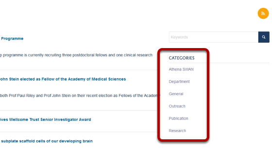
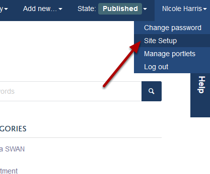
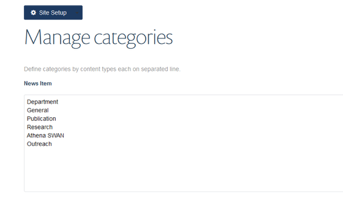

News Categories offer you a way to organise your news and help visitors to your site find what they are looking for. They display on the right hand side of the News page:
New Categories are added through the Site Setup page. To find this page click on the arrow next to your name in the right hand corner of the tool bar at the top of the page.
Click on Site Setup.
Click on Categories.
Type your categories into the News Item box at the top of the page.
Scroll to the bottom of the page. Click on Save.
When adding or creating News items these categories will now be available to you in the Categories lists towards the bottom of the Contents tab on the editing interface. Categories in the left hand column are the categories available to you. Categories in the right hand column are categories that have been assigned to the news item.
To assign a category to a news item: 1. Highlight it in the left hand column. 2. Click on the top arrow to move it to the right hand column. 3. Click on Save.